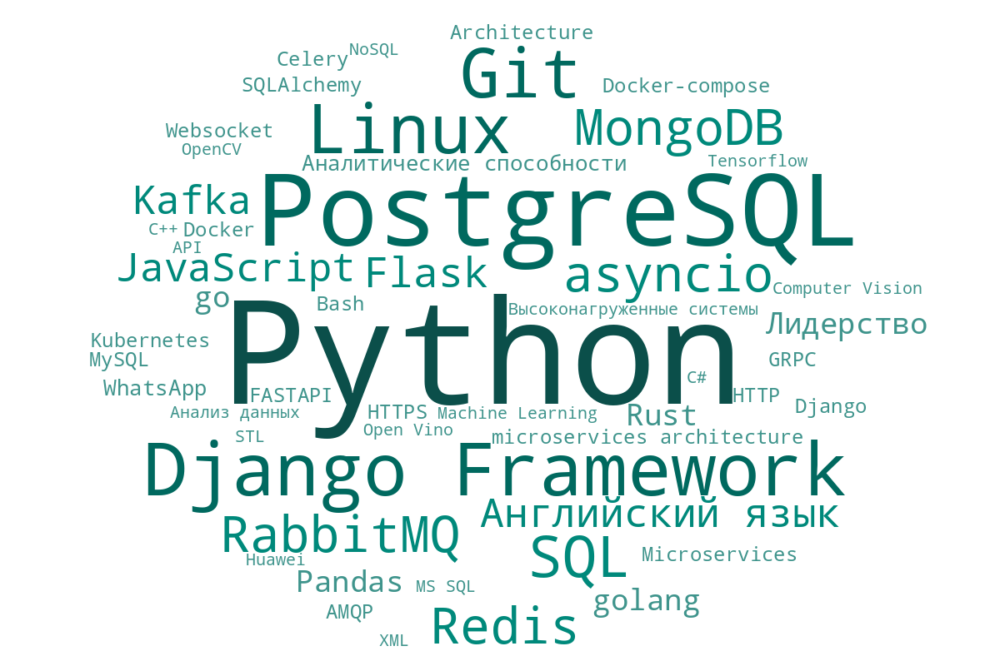
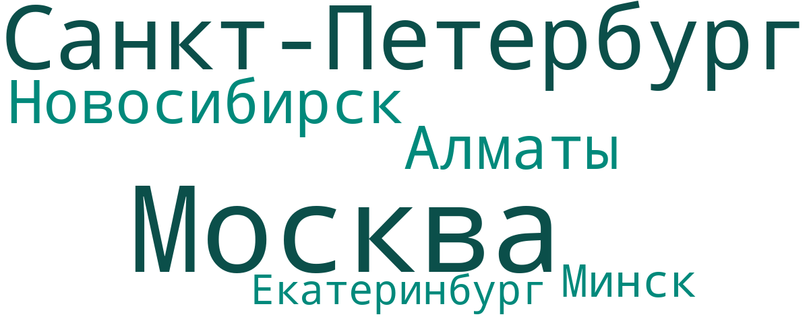

Парсер вакансий hh.ru
Веб-приложение на Django. Вы указываете профессию, город и сколько вакансий разобрать – оно собирает вакансии через API hh.ru и показывает, какие навыки, города и зарплаты встречаются чаще всего.
Дипломный проект курса «Python developer», Университет искусственного интеллекта, 2022. Ниже – результат одного запроса, сохранённый в базе проекта.
Самые частые навыки
20 вакансий, 53 навыка, 107 упоминаний
Где ищут и сколько платят
Те же 20 вакансий. Приложение считает долю каждого города и среднюю зарплату по городу.
Вакансии по городам
Число вакансий и доля от общего числа
Средняя зарплата
Только вакансии с зарплатой в рублях. Если указана одна граница, берётся она, иначе середина вилки.
Облака навыков и городов
Приложение строит облака библиотекой wordcloud: чем чаще слово, тем крупнее.


Все 53 навыка таблицей
| № | Навык | Упоминаний | Доля |
|---|---|---|---|
| 1 | Python | 18 | 16.8% |
| 2 | PostgreSQL | 7 | 6.5% |
| 3 | Django Framework | 7 | 6.5% |
| 4 | Git | 6 | 5.6% |
| 5 | Linux | 6 | 5.6% |
| 6 | SQL | 4 | 3.7% |
| 7 | Redis | 3 | 2.8% |
| 8 | RabbitMQ | 3 | 2.8% |
| 9 | asyncio | 3 | 2.8% |
| 10 | MongoDB | 3 | 2.8% |
| 11 | Flask | 2 | 1.9% |
| 12 | Английский язык | 2 | 1.9% |
| 13 | JavaScript | 2 | 1.9% |
| 14 | Kafka | 2 | 1.9% |
| 15 | Rust | 1 | 0.9% |
| 16 | Лидерство | 1 | 0.9% |
| 17 | golang | 1 | 0.9% |
| 18 | go | 1 | 0.9% |
| 19 | Pandas | 1 | 0.9% |
| 20 | Аналитические способности | 1 | 0.9% |
| 21 | 1 | 0.9% | |
| 22 | microservices architecture | 1 | 0.9% |
| 23 | Bash | 1 | 0.9% |
| 24 | Docker-compose | 1 | 0.9% |
| 25 | SQLAlchemy | 1 | 0.9% |
| 26 | Django | 1 | 0.9% |
| 27 | Architecture | 1 | 0.9% |
| 28 | Microservices | 1 | 0.9% |
| 29 | Kubernetes | 1 | 0.9% |
| 30 | Docker | 1 | 0.9% |
| 31 | Celery | 1 | 0.9% |
| 32 | HTTP | 1 | 0.9% |
| 33 | HTTPS | 1 | 0.9% |
| 34 | AMQP | 1 | 0.9% |
| 35 | Websocket | 1 | 0.9% |
| 36 | GRPC | 1 | 0.9% |
| 37 | MySQL | 1 | 0.9% |
| 38 | FASTAPI | 1 | 0.9% |
| 39 | Высоконагруженные системы | 1 | 0.9% |
| 40 | XML | 1 | 0.9% |
| 41 | MS SQL | 1 | 0.9% |
| 42 | NoSQL | 1 | 0.9% |
| 43 | API | 1 | 0.9% |
| 44 | STL | 1 | 0.9% |
| 45 | C++ | 1 | 0.9% |
| 46 | C# | 1 | 0.9% |
| 47 | Анализ данных | 1 | 0.9% |
| 48 | OpenCV | 1 | 0.9% |
| 49 | Tensorflow | 1 | 0.9% |
| 50 | Computer Vision | 1 | 0.9% |
| 51 | Machine Learning | 1 | 0.9% |
| 52 | Huawei | 1 | 0.9% |
| 53 | Open Vino | 1 | 0.9% |
Что внутри
Помимо парсера в проекте есть учётные записи, редактирование данных и REST API.
- Сбор данных
- Запросы к API hh.ru постранично, по 20 вакансий. Навыки берутся из карточки каждой вакансии, затем считаются доли, рейтинги и облака слов.
- Данные и редактирование
- Модели Django и SQLite. Списки навыков и городов на class-based views: просмотр, создание, правка, удаление. Админка Django.
- Пользователи
- Своя модель пользователя, регистрация, вход, профиль. В профиле можно выпустить и обновить API-токен, в том числе через AJAX.
- REST API
- Django REST Framework:
/api/v0/cities/,/api/v0/skills/,/api/v0/cities_salary/. Города и зарплаты читают все, меняет только администратор. Навыки доступны после входа по сессии, логину или токену. - Тесты
- 20 тестов на модели и представления: unittest и mixer.
- Стек
-
- Python 3.10
- Django 4.0
- Django REST Framework
- SQLite
- requests
- wordcloud
- matplotlib
- Bootstrap
- jQuery
Как запустить
Нужен Python 3.10.
git clone https://github.com/alex281172/Django_HH.git
cd Django_HH
python -m venv .venv
source .venv/bin/activate # Windows: .venv\Scripts\activate
pip install -r requirements.txt
cd DjangoHH
python manage.py migrate
python manage.py createsuperuser
python manage.py runserverЗатем откройте http://127.0.0.1:8000 и войдите под созданным пользователем.
Почему здесь сохранённые данные
В 2026 году hh.ru закрыл анонимный доступ к поиску вакансий через API: теперь нужна авторизация приложения. Поэтому на этой странице показан результат, сохранённый в 2022 году, а не живой запрос. Код парсера в репозитории остался в исходном виде.